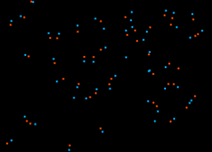

Exochemistry Cookbook
Click here to improve this text.
Introduction
On the home planet of the author, the word "Chemistry" describes the study of emergent properties of atoms. "Exochemistry" is, on the other hand, the study of emergent properties of particles in other universes, obeying different laws of physics.
Let this document be your guide to the emerging field of Exochemistry.
Emergence
Emergence occurs in a complex system when objects (like exophysics particles) interact in ways that gives rise to phenomena that are not found within the individual objects themselves.
One proton, neutron or electron alone will never have any properties like temperature, pressure, shape, color, taste, or intelligence. But if you take a very very big pile of them, apply the laws of physics, and let them interact for about 14,000,000,000 years, a smooth-skinned, smelly, intelligent creature emerges, staring at a screen and reading this text.
There are various resources on the topic of emergence on the human-era "internet". If you happen to be within the realms of the humans, with access to this "internet", you could benefit from the following hyperlinks:
- YouTube/Kurzgesagt: Emergence - How Stupid Things Become Smart Together
- YouTube/PBS Space Time: Could Life Evolve Inside Stars?
- Wikipedia: Emergence
Cookbook
Not every universe is a host to emergence and exochemistry. In fact, creating one with beautiful emergent properties is the ultimate art form. But how do you even start?
There are two necessary ingredients for emergence:
- Diversity in the types of objects
- Balanced interactions between those objects
Diversity
Diversity among particles unlocks new kinds of interactions. Let's take the simple exophysics universe [EPILEPSY WARNING]: Dorilia as an example. It's home to the following exochemical properties:
- Red and blue particles can join each other to combine a sort of stationary "atom"
- Two atoms can join each other to form a chemical bond. A peculiar molecule emerges, that moves along perpendicular to the axis of the chemical bond.
- Three particles of non-identical colors can form a stable, fast-moving atom under rare conditions
- Under high pressure (when too many particles occupy the same space), a chaotic plasma cloud forms, destroys molecules, and moves at even higher speed. When it reaches a space with less density, it recombines into individual particles, atoms or molecules.
- And more...

Here, each particle has the following properties that differentiates them from each other:
state.x: The location along the first spatial dimensionstate.y: The location along the second spatial dimensionstate.z: The "health" of a particle. If it drops to zero, the particle decays.- When the particle is in the top half of the screen, it gains energy, and in the bottom half it slowly loses energy.
- This is just a little thing to make things more interesting, but doesn't contribute much to emergence.
state.w: The "flavor" or "charge" of the particle. This is similar to "positive" and "negative" electric charge in the home universe of the author.- state.w is randomly assigned to be between 0.0 and 1.0.
- If the value is below 0.5, the flavor is defined to be 1, and the particle becomes red.
- If the value is above or equal to 0.5, the flavor is defined to be -1, and the particle becomes blue.
oldV.x: The velocity of the particle along the first spatial dimensionoldV.y: The velocity of the particle along the second spatial dimension
These properties contribute in different ways towards emergence:
state.x/y,oldV.x/y: Helpful, but not sufficient for emergencestate.w: Allows discriminatory forces (see below) to produce emergencestate.z: Doesn't contribute to emergence yet, but we if we add a new force that acts based on this property, some new, interesting phenomena might emerge.
Interactions
Non-discriminatory forces
Non-discriminatory forces act the same way on every particle, similarly to the gravitational force in the author's home universe. The distance between particles typically still plays a role, so in a strict sense, even this type of force is discriminatory between close and far particles, but I will conveniently neglect this fact.
A gravitation-like non-discriminatory force could attract every particle towards each other, making them orbit the center of mass. This does not lead to the emergence of exochemistry.
There may be configurations of non-discriminatory forces that lead to exochemistry, though at this spacetime, the author knows of none. The creation of such is left as an exercise to the reader.
Discriminatory forces
Discriminatory forces act differently depending on certain properties of the interacting particles. Similarly to the electromagnetic force in the author's home universe, where objects with the same charge repel each other, while objects with an opposite charge attract each other.
In the example above, a discriminatory force is responsible for the emergence of exochemical properties. This is the (simplified) relevant code:
int myCharge = (state.w < 0.5) ? 1 : -1;
for (int i = 0; i < particleLimit; i++) {
if (i == currentIndex) { continue; } // don't interact with yourself
otherState = allStates[i];
otherCharge = (otherState.w < 0.5) ? 1 : -1;
distance = otherState.xy - state.xy;
direction = float(myCharge * otherCharge);
acceleration = -0.0001 * distance.xy / pow(length(distance.xy), 4.0);
velocity.xy += acceleration * direction;
}
This is just one of many ways to write a non-discriminatory
force, but the key part is that there's a direction which
depends on the "charge" of the particles. There's also various
constants, like the -0.0001, which mediates the
strength of this force. The 4.0 within the
"pow()" function takes the distance to the power
of 4, resulting in a non-linear relationship between distance
and acceleration.
There is a lot to explore here, which is left as an exercise to the reader.
Limiting the velocity
A universal speed limit may contribute to the emergence of emergence by creating an environment where particles stay close together long enough for the forces to be able to act.
This is especially important in limited-precision simulations like Exophysics, where the time steps between each moment are relatively large, with only about 60 simulated moments per human second. As a result, for example, particles may fly past one another even though they should, in theory, collide and bounce off each other. This further results in a violation of a conservation of energy, with a tendency towards an energy explosion, and progressive heating of the universe. Countermeasures are also left as an exercise for the reader. On the flip side, this evades the heat death of the universe and let's you build perpetual motion machines.